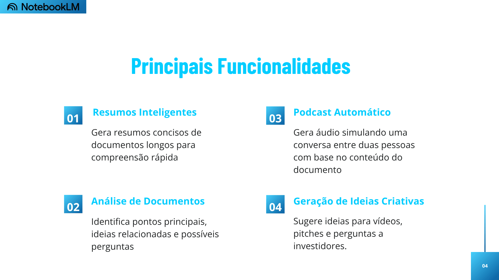
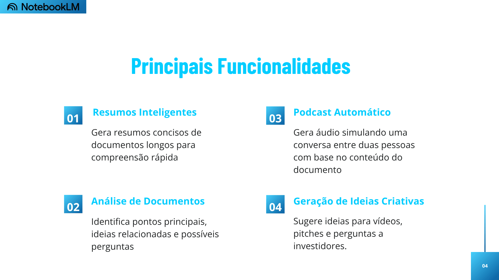

üìä Apresentando o NotebookLM
 

üé• V√≠deos Explicativos
NotebookLM üÜö ChatGPT
üìù Mat√©ria completa - TechTudo
Por Juliana Villarinho, Para o TechTudo
08/10/2024 06h00
O NotebookLM funciona como um assistente de pesquisa e escrita, servindo como um caderno de anotações inteligente. A plataforma permite criar "cadernos" personalizados, fazendo upload de documentos e pedindo para que a inteligência artificial (IA) faça resumos, responda perguntas sobre o arquivo, ajude a pesquisar algum tópico relevante e até crie podcasts baseados nos documentos ou anotações. A plataforma é alimentada pelo Gemini Google e pode ser usada gratuitamente, sendo necessário apenas ter uma conta Google para fazer login.
O que é NotebookLM?
NotebookLM é uma plataforma ainda experimental com IA generativa do Google pensada para auxiliar os usuários a terem um maior entendimento sobre determinado assunto. A ferramenta se tornou muito popular recentemente pela capacidade de criar podcasts a partir de documentos e anotações, criando áudios realistas que parecem um episódio verdadeiro, com dois apresentadores conversando de maneira fluida.
Ao criar um Notebook, o usuário pode adicionar até 50 arquivos para serem usados como fonte, incluindo PDFs, vídeos do YouTube, áudios, sites completos e documentos criados no Google Docs e Apresentações. Depois, a plataforma oferece resumos detalhados e o usuário pode solicitar ajuda para pesquisar esses documentos, criar um guia de estudo ou um plano de marketing baseado nas fontes, escrever notas, pedir para a IA transcrever os áudios, entre outras funções.
Quais são os principais recursos do NotebookLM?
O NotebookLM é a ferramenta ideal para analisar documentos de maneira mais aprofundada, sendo possível usar a inteligência artificial como uma verdadeira aliada nos estudos ou trabalho. A plataforma consegue criar resumos detalhados sobre documentos complexos e age como um assistente virtual para se aprofundar em um assunto baseando-se nas fontes informadas.
Sendo assim, é possível usar a ferramenta para transcrever áudios, analisar documentos, criar resumos, pesquisar nas fontes enviadas, fazer perguntas sobre o conteúdo dos documentos e criar podcasts realistas com base nos arquivos. A plataforma também permite que o usuário salve as respostas dadas pela IA como notas e também crie anotações originais.
O Google NotebookLM realmente cria podcast?
Ao criar um novo Notebook, é preciso fazer upload de arquivos para serem usados como fontes. Esses documentos podem ser PDFs, .TXT, Markdown, áudios, vídeos do YouTube, sites completos ou links do Google Docs e Apresentações. Quando os arquivos são carregados, a inteligência artificial faz uma rápida análise e apresenta um resumo superficial e pergunta o que o usuário quer fazer com aqueles conteúdos.
Uma das possibilidades apresentadas é criar uma “Conversa aprofundada” com base nos conteúdos enviados. Ao selecionar essa opção, a inteligência artificial gera um arquivo de áudio que simula um podcast realista, com dois apresentadores conversando sobre o assunto. É possível, então, compartilhar ou baixar o arquivo de áudio, mudar a velocidade do áudio e também classificá-lo como “gostei” e “não gostei”.
Por enquanto, esse recurso só está disponível em inglês. Sendo assim, mesmo que as fontes estejam todas em português, o podcast será criado na língua inglesa. Como a maioria dos produtos gerados por IA, os áudios criados pelo NotebookLM podem apresentar alguns erros ou falhas. Além disso, a ferramenta não oferece um recurso de edição dos áudios, apenas a possibilidade de mudar a velocidade de reprodução.
Como usar o NotebookLM?
Para usar o NotebookLM é preciso ter uma conta Google e acessar a plataforma pelo link https://notebooklm.google.com. Em seguida, clique em “Criar” para começar um novo Notebook e faça o upload dos arquivos desejados. É possível selecionar documentos do dispositivo ou usar links do Google Docs, Apresentações Google, sites, vídeos do YouTube ou colar um texto no local indicado. A plataforma aceita até 50 arquivos de diversas origens.
O NotebookLM irá analisar automaticamente os documentos enviados e fará um resumo do conteúdo. Além disso, a ferramenta oferece sugestões do que fazer com o conteúdo, como criar um guia de estudos, uma linha do tempo, uma lista de perguntas frequentes, entre outras. O NotebookLM também gera algumas perguntas com base nos documentos analisados e oferece a possibilidade de criar um “áudio aprofundado”, com dois hosts conversando de maneira realista e fluida.
Ao pedir para a IA responder algum questionamento ou fazer pesquisa nas fontes adicionadas, a ferramenta apresenta, em formato de citações, o trecho do documento usado como referência. O usuário pode interagir com cada Notebook de maneira contínua, usando o campo de mensagem para fazer perguntas complementares como em um chatbot comum, adicionando novos documentos para serem usados como fonte e criando anotações próprias. As respostas geradas pela IA também podem ser salvas como uma nota.
Qual é a diferença entre NotebookLM e Gemini?
A maior diferença entre o NotebookLM e o Gemini Google é seu objetivo principal de uso. O Gemini é um chatbot generativo capaz de realizar inúmeras funções, como criar textos criativos, pesquisar na internet, gerar e analisar imagens, desenvolver códigos, entre outros. Já o NotebookLM é mais voltado para a análise de documentos, algo que o Gemini ainda não consegue fazer.
A inteligência artificial no NotebookLM usa os conteúdos fornecidos pelos usuários como fonte principal, podendo fazer resumos detalhados, pesquisar nas fontes e responder perguntas baseadas nestes arquivos. O NotebookLM é alimentado pelo modelo multimodal Gemini 1.5 Pro. A ferramenta ainda está em fase experimental e pode apresentar alguns erros ou bugs.
Fonte: TechTudo